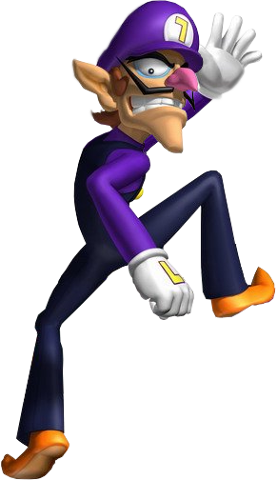

Waluigi, el Mario morado

Es el único de los Marios que no tiene juegos propios, creado como contrapartida de Luigi siendo la misma idea que la tupla Mario-Wario aparece en las franquicias deportivas así como en algun Mario Party
Los principales juegos donde aparece son:
- Mario Tennis (2000)
- Mario Party 3 (2000)
- Mario Kart: Double Dash!! (2003)
- Mario Power Tennis (2004)
- Mario Superstar Baseball (2005)
- Mario Strikers Charged (2007)
- Mario Kart Wii (2008)
- Mario Sports Mix (2010)
- Mario Tennis Open (2012)
- Mario Kart 8 (2014)
- Mario Tennis Aces (2018)
- Mario Golf: Super Rush (2021)
- Mario Strikers: Battle League (2022)